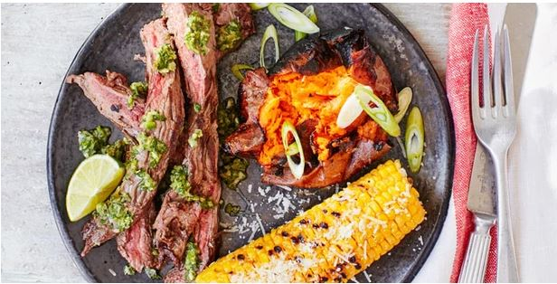

See
Wild Tales
"In The Rats, a waitress (Julieta Zylberberg) at a roadside dive finds herself serving the arrogant loan shark (Cesar Bordon) who drove her father to suicide and prompted her mother to pack them off to another town. Now he's in line for mayor. "Bastards run the world," says the take-charge cook (Rita Cortese), which is all the justification she needs to spice up his egg and chips with an unorthodox ingredient." - Cuban
Wild Tales movieListen
Argentinan Tango
Argentinan. "To many, the music of Argentina is tango, but music tastes of this diverse country were built on numerous styles. Outside Buenos Aires, the cradle of the traditional tango music, another musical style reigns and manages to captivate minds of people - Argentine folklore. Argentine folk music and dance developed much before the arrival of tango, mixing the styles of song and dance of indigenous people, colonial settlers from Europe (mostly Spain), and African slaves who all started settling into the newly formed country during the 17th century" - Salsa songs
Argentinan MusicTaste
Chimichurri
Ingredients A green salsa made of finely chopped parsley, oregano, onion, garlic, chilli pepper flakes, olive oil and a touch of acid, such as lemon or vinegar, chimichurri is the country’s go-to condiment.. This tangy, garlickly salsa is sometimes used as a marinade, though most often it’s found blanketing grilled meats and heaps of other savoury foods throughout the country here, or check out her recipe .
 Chimichurri